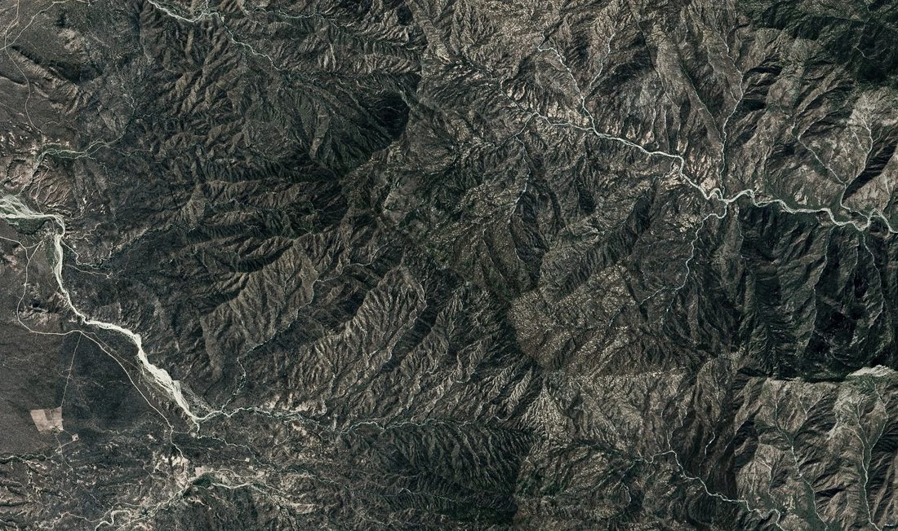
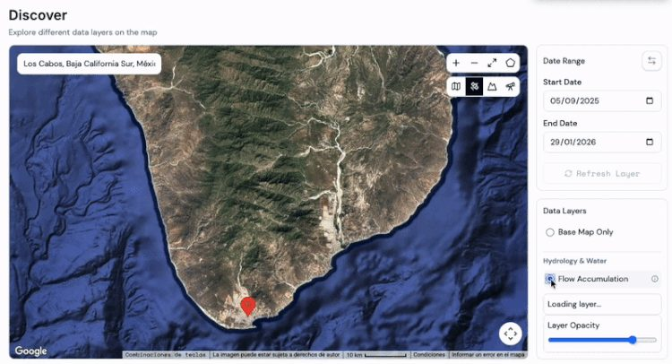
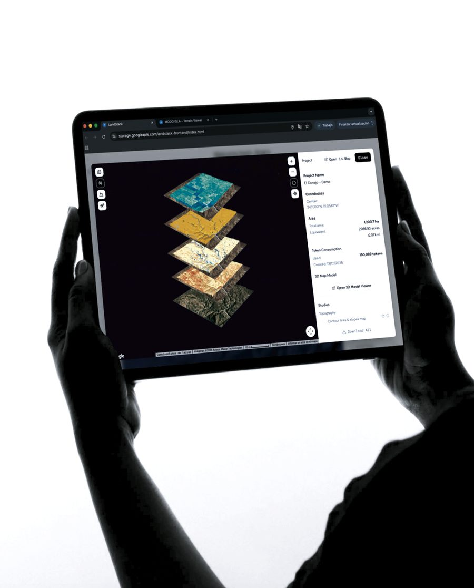
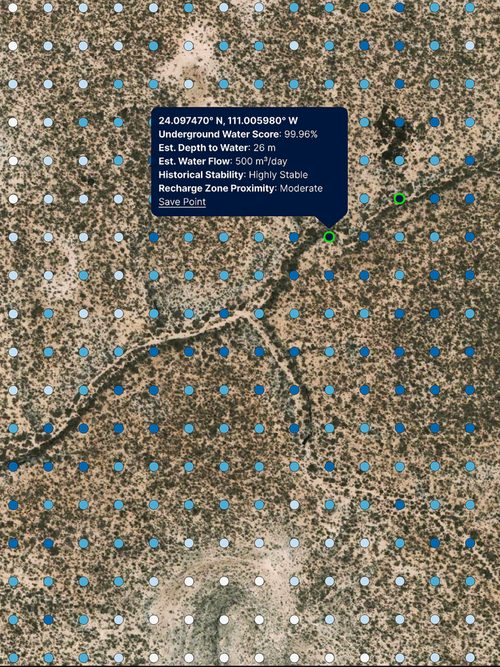
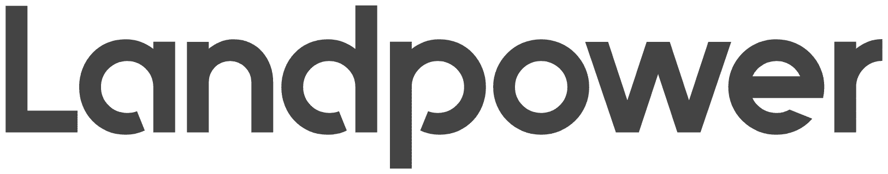
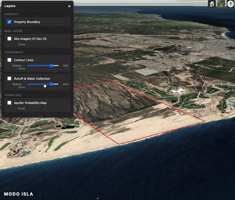

Localizar
Agua subterránea y patrones del sitio antes de perforar o hacer estudios de campo.
Análisis satelital, inteligencia artificial y planeación regenerativa para tomar decisiones de inversión y desarrollo con datos reales del sitio — no solo supuestos.

¿Hay agua disponible en el sitio, y cómo se mueve?
¿Es viable construir aquí, y con qué restricciones?
¿Qué riesgos climáticos enfrenta el sitio a largo plazo?
¿Cómo es la vegetación, el uso de suelo y el acceso a infraestructura cercana?
Combinamos imágenes satelitales de alta resolución, modelamiento hidrológico e inteligencia artificial para revelar lo que no se ve a simple vista.
Agua subterránea y patrones del sitio antes de perforar o hacer estudios de campo.
Volumen, flujo y comportamiento del agua a lo largo del año.
Mapas y modelos 3D interactivos, listos para decisión.

Capas de agua, vegetación, clima e infraestructura, navegables y comparables.
Interactive layers
Pendiente, elevación y morfología, compatible con flujos de trabajo CAD.
CAD ready
Hallazgos, riesgos y oportunidades sintetizados para inversión, diseño o planeación.
Decision readyModo Isla es el primer paso. Si tu terreno tiene lo necesario para sostener un desarrollo autosuficiente —energía, agua, movilidad y agricultura— Landpower diseña, implementa y opera ese sistema contigo, como socio de desarrollo durante los próximos 30 años.


Para terrenos que buscan convertirse en un desarrollo autosuficiente junto con Landpower.
Inteligencia territorial por sí sola, sin compromiso posterior de desarrollo.
Agenda una llamada y cuéntanos sobre tu terreno.
Agenda tu diagnóstico ↗